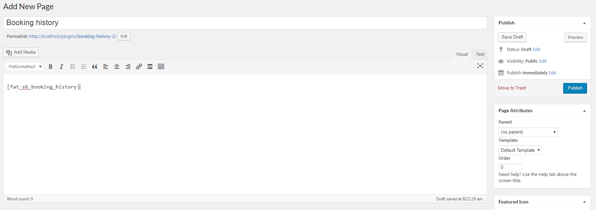
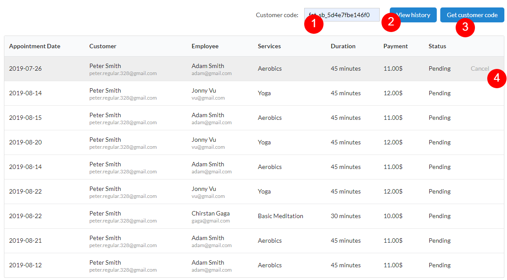
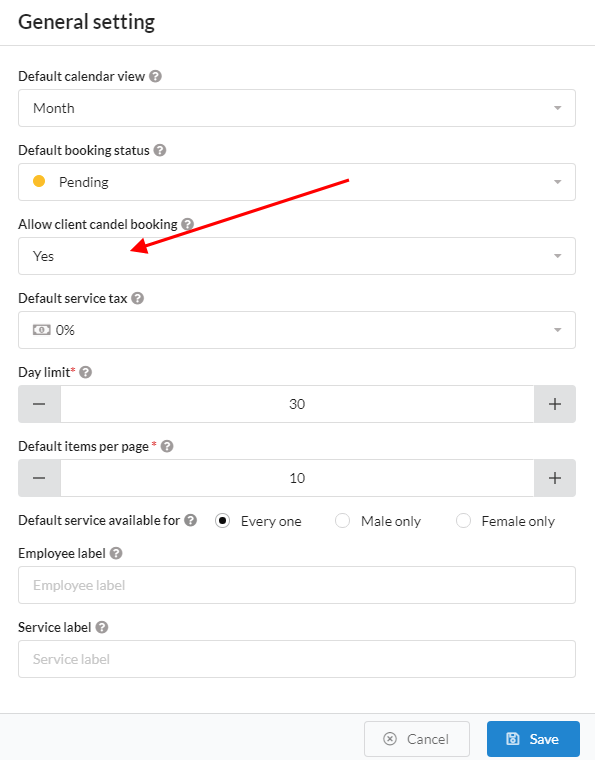

How to use price package
FAT Service Booking has a shortcode what display booking history for your client. Each client will be have customer code, this code will be use when your client want to see booking history
To use booking history at frontend, please do follow:
- Log into your WordPress admin panel.
- Navigate to Pages » Add new pages.
- Input page title and paste this shortcode to Editor: [fat_sb_booking_history].
If you use page builder (ex: Visual Composer or Element), please add 'Text' element and paste this shortcode to editor of this element
- Click 'Publish' button to save and publish page.

Create booking history page.

Booking history at frontend.
- 1. Customer code: to see booking history, your client need input customer code at here and click 'View history'
- 2. View history: After input customer code, click this button to get history
- 3. Get customer code: To get customer code, please click at 'Get customer code', and fill email to popup. Plugin will be send customer code to they email
- 4. Cancel: If you want to cancel booking, please hover mouse on booking that you want cancel and click 'Cancel', plugin will be request re-input customer code before cancel.
Plugin only allow cancellation of reservations that are pending.

Enable/Disable cancel booking.
Enable/Disable cancel in booking history
In some case, if you want disable cancel booking, please go to 'FAT Service Booking' -> Setting, click 'General Setting' and select 'No' at 'Allow client cancel booking'